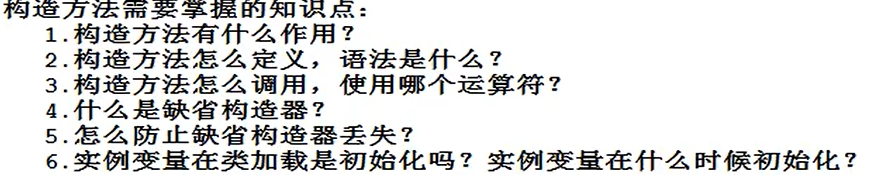

空指针异常 NullPointerException
引用没指向任何对象。
//空引用调用实例对象或者实例方法。空引用调用静态变量则不会出现空指针异常。//静态变量通过类名访问，不建议通过对象访问。
java中的垃圾回收期GC只要针对堆内存中的垃圾数据，当没有任何引用指向该对象，会被判定为垃圾。
参数传递
参数传递的时候，和类型无关，都是将变量里的“值”传递。
引用类型传的是对象的内存地址。
构造方法
作用：创建对象，初始化实例变量（手动赋值，或者系统赋默认值）。


当一个类没有任何构造方法，系统会默认一个无参构造方法，这个无参构造方法被称为缺省构造器。
当类中有构造方法，系统就不再默认无参构造方法了。
语法结构

主：1.构造方法名和类名必须一致
2.构造方法没有返回值。
3.构造方法通过 new 运算符 调用。
思考：

构造方法执行的时候。（new 的时候）

封装
面向对象的三大特征：封装，继承，多态。
有了封装才有继承，有了继承，才能说多态。
封装的作用：1.保证内部结构的安全。
2.屏蔽复杂，暴露简单。

怎么进行封装？
1.属性私有化（private）
2.属性设置set get方法提供入口，在set方法中设置条件保证数据的安全性。（读写成员变量）

static关键字
1.static翻译为“静态的“。
2.所有static修饰的都是类相关的，类级别的。
3.所有 static修饰的，都是采用“类名".
的方式进行访问。
//不需要对象，不会出现空指针异常。
变量什么时候声明为静态变量？
//Chinese类的country属性定义为成员变量

//Chinese类的country属性定义为静态变量
//静态变量在类加载时初始化，不需要new对象，静态变量的空间就开辟了
//静态变量存储在方法区
//静态变量通过类名进行访问
 实例变量是每个对象一份，静态变量是该类所有对象共有的。
实例变量是每个对象一份，静态变量是该类所有对象共有的。对于方法来说，神魔时候定义为实例方法？神魔时候定义为静态方法？
当方法体中访问了实例变量，这个方法一定是实例方法。静态方法不需要new对象，使用方便，工具类一般用静态方法。
使用static可以定义静态代码块
语法
static{
java 语句；
java 语句；
}
注：
//静态代码块在类加载时执行，并且只执行一次
//静态代码块自上而下执行，且main()函数最后执行
//一个类可以写多个静态代码块
静态代码块有什么用？（特殊的时机：类加载时机）


实例语句块
{
java语句；
}
构造方法执行时，
实例语句块在构造方法执行之前执行。

运行结果 ：
：
：————————————————————————
this关键字
一个对象一个this
this 是一个引用。this保存当前对象的内存地址，指向自身，所以，this代表的就是当前对象
this存储在堆内存当中对象的内部

this只能使用在实例方法中，谁调用这个实例方法，this就是谁。
所以this代表的是：当前对象。
//此时this.可以省略
为什莫静态方法中不能用this？

//this代表当前对象，static无对象

什么时候使用实例方法？什么时候使用静态方法？
1.如果在方法里使用了实例变量，该方法必须为实例方法。